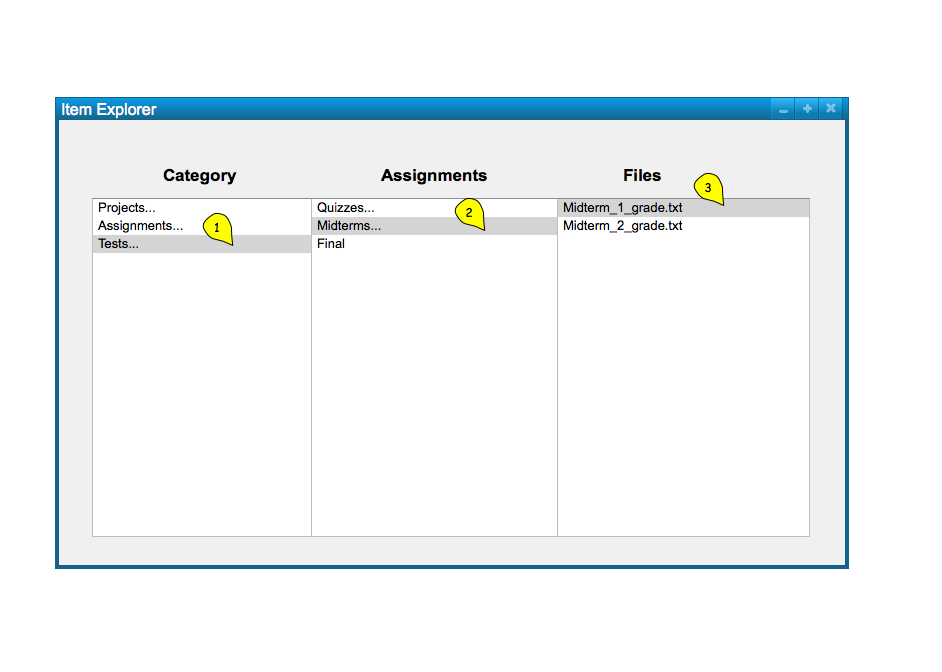
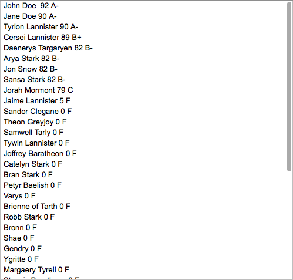

Figure 1 below shows an Explorer-style implementation of the spreadsheet's data hierarchy.

Figure 1: Explorer.
At the very last level of the hierarchy, there are text files that hold the data for each student in a simple format. This is represented by Figure 2.

Figure 2: Text File.